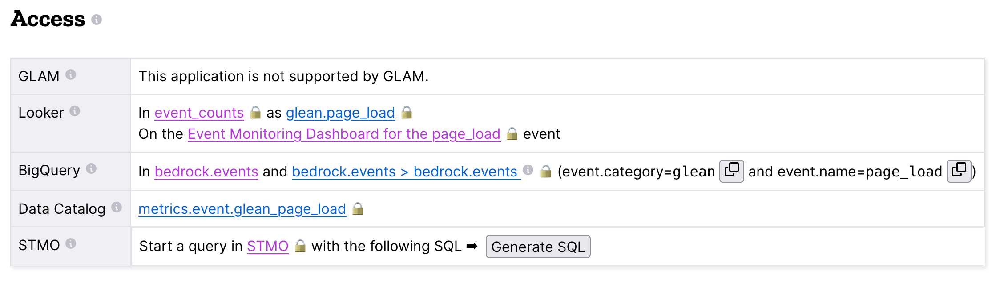

Mozorg Analytics
Mozorg analytics¶
Google Analytics¶
We use Google Analytics (GA) to track how our website is used.
Implementation
Google calls a 3rd party JavaScript library that is imported by adding a script tag to a website, Google names these "tags".
We include the tag for Google Tag Manager (GTM) on our website. GTM is a service meant to simplify and centralize the tags included on a website in cases where multiple tags are needed. Their web-based user interface can then be used to watch for user actions on the website and then trigger events to be sent to tags.
We do no not use any of GTM's most powerful features. Our use of GTM is a historical artifact of our Universal Analytics (UA) (aka GA3) implementation. GTM is a tool to let non-technical users add code to a website, however, there is no one outside of the websites team who is trained to do that.
The only tag we include with GTM is the Google Tag (GTag), and that in turn connects to our Google Analytics (GA) account.
There are three ways we send events from our site to GA:
- Google's Enhanced Event Measurement logs certain events automatically.
- GTM watches elements with specific data-attributes for user interaction
- Bedrock watches for specific events, formats them, and sends them to GTM using the dataLayer
Implementation Principles
The current implementation tries very hard to keep any kind of logic and formatting of our events in bedrock where it can be tested, code reviewed, and version controlled.
Many user interactions will trigger multiple events. For example: clicking the "get subscription" button on the VPN page will trigger link, cta_click, and begin_checkout events. This is totally fine.
If you're creating a new event use the two word noun_verb scheme that Google came up with and use snake_case, even if one of your noun or verb is more than one word.
Debugging
- GTM is managed with Tag Manager https://tagmanager.google.com/
- Our gTag is also managed with Tag Manager https://tagmanager.google.com/#/home#tags
- GA, GTM, and gTag can be debugged using Tag Assistant https://tagassistant.google.com/
- GA also has a debug view https://support.google.com/analytics/answer/7201382?hl=en
How can visitors opt out of GA?¶
Visitors to the website can opt-out of loading Google Analytics on our website by enabling Do Not Track (DNT) in their web browser. We facilitate this by using a DNT helper that our team maintains. We also respect Global Privacy Control (GPC) as an additional opt-out signal.
Alternatively, visitors can also opt-out of GA by visiting the cookie settings page, which is linked to in the main site footer on every page.
Event Tracking¶
Enhanced Event Measurement¶
Pageviews, scrolls, video events, and outbound link clicks are being collected using GA4's enhanced event measurement.
Some form submissions are also being collected but newsletter signups are not (see bug #13348) . They are instead being tracked with the newsletter_subscribe event.
See the full list of events GA collects by default. https://support.google.com/analytics/answer/9216061
Data Attributes¶
One place where we do still rely on GTM to watch for an trigger events is when we use data-attributes to pass information. There are only two events we do this with and they are primarily used on buttons and links.
CTA Click¶
CTA ("Call to Action") click is intented to track the one or two main actions the page is designed to get the user to do. This data-attribute can be used on either <button> or <a>. Links can go to or away from the site, a button might trigger a JS function instead of going away from the page, that's still a cta.
The attribute data-cta-text must be present to trigger the event. All links to accounts.mozilla.com must also use data-cta-type.
| Data Attribute | Expected Value |
|---|---|
data-cta-text * |
Text or name of the link (e.g. Sign Up, Start Here, Get Relay, See your report, Read the Manifesto). |
| - This does not need to exactly match the text displayed to the user | |
| - Defining this is useful to group the link clicks across locales | |
| - - this attribute is required | |
data-cta-position |
Location of CTA on the page (e.g. primary, secondary, banner, pricing) |
data-cta-type |
fxa-servicename (e.g. fxa-sync, fxa-monitor, fxa-vpn, monitor, relay, pocket) |
| - This is to group CTAs by their destination | |
| - Do not use this to identify the element (ie. link, button) | |
data-cta-name |
A identifier for this cta that is unique across the entire site. (e.g. fx20-primarycta, wnp118-sfaq-so-special-features). This is to help with reporting since it is difficult to filter on more than one parameter at a time. |
<a href="https://monitor.firefox.com/" data-cta-text="Check for breaches" data-cta-type="fxa-monitor">Check for breaches</a>
<a href="{{ url('firefox.browsers.mobile.get-app') }}" data-cta-text="Send Link for Firefox Mobile" data-cta-position="banner">Send me a link</a>
<a href="{{ url('firefox.browsers.mobile.ios') }}" data-cta-text="Firefox for iOS">Firefox for iOS</a>
Link Click¶
Link click is intended to track links that are of interest but not the focus of the page. Examples include links in paragraphs, lists, FAQs, supplemental content, or in a navigation menu. Links can go to or away from the site.
The attribute data-link-text must be present to trigger the event.
| Data Attribute | Expected Value |
|---|---|
data-link-text * |
Text or name of the link (e.g. Monitor, Features, Instagram (mozilla), Mozilla VPN). - * this attribute is required |
data-link-position |
Location of CTA on the page (e.g. topnav, subnav, body, features) |
<p>This is text with a <a href="#" data-link-text="simple">simple</a>example.</p>
<li><a href="{{ url('firefox.features.pdf-editor') }}" data-link-text="Edit PDFs">Edit PDFs</a> on the go within your Firefox browser window.</li>
Link click is also commonly used for navigation menus. If you wish to indicate that a link is nested you can include the categories seperated by a dash (topnav - firefox, footer - company)
<li><a href="{{ url('firefox.developer.index') }}" data-link-text="Firefox Developer Edition" data-link-position="footer">{{ ftl('footer-developer-edition') }}</a></li>
<li><a href="{{ url('firefox.browsers.mobile.android') }}" data-link-text="Firefox for Android" data-link-position="topnav - firefox"></li>
Data Layer Events¶
The data layer is a JS object we can push events to and GTM will read from it.
We push a mix of recommended events and custom events to the data layer. When creating a new custom event please follow the Implementation Principles outlined above. Remember, both GTM and GA must be configured to recieve new events.
https://mozilla-hub.atlassian.net/wiki/spaces/EN/pages/430866463/GA4+Custom+Events
https://developers.google.com/tag-platform/tag-manager/datalayer
Events that bedrock will send to GTM include:
- begin_checkout
- cta_click
- default_browser_set
- dimension_set
- experiment_view
- link_click
- newsletter_subscribe
- product_download (firefox_download, firefox_mobile_download, etc)
- send_to_device
- social_share
- stub_session_set
- widget_action
Begin Checkout¶
We are using GA4's recommended eCommerce event begin_checkout for VPN referrals to the FxA Subscription Platform with purchase intent. This event can accept values for other products but we are not currently using it for anything other than VPN.
Note
Any link to Mozilla accounts should also be using mozilla accounts attribution<mozilla-accounts-attribution>
datalayer-begincheckout.es6.js contains generic functions that can be called on to push the appropriate information to the dataLayer. The script is expecting the following values:
| Property | Value |
|---|---|
item_id |
Text or name of the link (e.g. Sign Up, Join Now, Start Here). |
brand |
fxa-servicename (e.g. fxa-sync, fxa-monitor) |
plan |
Location of CTA on the page (e.g. primary, secondary, header) |
period |
Location of CTA on the page (e.g. primary, secondary, header) |
price |
Location of CTA on the page (e.g. primary, secondary, header) |
currency |
Location of CTA on the page (e.g. primary, secondary, header) |
discount |
Location of CTA on the page (e.g. primary, secondary, header) |
- item_id: Stripe Plan ID
- brand:
relay,vpn, ormonitor -
plan:
vpn-monthlyvpn-yearlyvpn-relay-yearlyrelay-email-monthlyrelay-email-yearlyrelay-phone-monthlyrelay-phone-yearlymonitor-monthlymonitor-yearly
-
period:
monthlyoryearly -
price: cost displayed at checkout, pre tax (example: 119.88)
-
currency: in 3-letter ISO 4217 format (examples: USD, EUR)
-
discount: value of the discount in the same currency as price (example: 60.00)
There are two ways to use TrackBeginCheckout:
1) Call the function passing the values directly.
2) Pass the values as a data attribute.
The vpn_subscribe_link will automatically generate a data-ga-item object and add the ga-begin-checkout class to links they create -- as long as there is analytics information associated with the plan in its lookup table.
To use this method you will need to include datalayer-begincheckout-init.es6.js in the page bundle.
<a href="{{ fxa link }}"
class="ga-begin-checkout"
data-ga-item="{
'id' : 'price_1Iw7qSJNcmPzuWtRMUZpOwLm',
'brand' : 'vpn',
'plan' : 'vpn',
'period' : 'monthly',
'price' : '9.99',
'discount' : '0',
'currency' : 'USD'
}"
>
Get monthly plan
</a>
Default Browser¶
Trigger this event when a user sets their default browser to Firefox. It's an important conversion for us!
Newsletter Subscribe¶
Product Downloads¶
Important
VPN support has not been added. Firefox, Firefox Mobile, Focus, Klar, and Pocket are currently supported.
When the user signals their intent do install one of our products we log a download event named for the product. This intent could be: clicking an app store badge, triggering a file download, or sending themselves the link using the send to device widget. The events are in the format [product name]_download and all function the same. So they use the same JavaScript "TrackProductDownload". For this documentation the following custom events will be talked about as product_download :
firefox_downloadfirefox_mobile_downloadfocus_downloadklar_downloadpocket_download
Properties for use with product_download (not all products will have all options):
- product (one of: firefox, firefox_mobile, focus, klar, pocket, vpn)
- platform optional (one of: win, win-msi, win64, win64-msi, win64-aarch64, macos, linux, linux64, android, ios)
- method (one of: site, store, or adjust)
- release_channel optional (one of: release, esr, devedition, beta, nightly)
- download_language optional (example: en-CA)
There are two ways to use TrackProductDownload:
1) Call the function, passing it the same URL you are sending the user to:
2) Add a class to the link:
You do NOT need to include datalayer-productdownload-init.es6.js in the page bundle, it is already included in the site bundle.
Note
Most apps listed in appstores.py are supported but you may still want to check that the URL you are tracking is identified as valid in `isValidDownloadURL ` and will be recognized bygetEventFromUrl`.
If you would like to track something as a download that is not currently in the appstores.py you can get and send the event object manually. This most often happens with adjust links generated for specific campaigns:
let customEventObject = TrackProductDownload.getEventObject(
'firefox_mobile',
'', // if you are not redirecting to a specific store, leave platform empty
'adjust'
);
TrackProductDownload.sendEvent(customEventObject);
Note
Calling TrackProductDownload will also fire an event named product_download so two events are being logged for each product download. This is because prior to Feb 2024 we only used one unified product download event and did not have the individual product download events yet. The split events are considered easier to deal with for reporting purposes inside GA4. Some data science dashboards use product_download because it has existed longer. Ideally, we will remove it some day.
Send to Device¶
Social Share¶
Stub Session Set¶
Widget Action¶
We are using the custom event widget_action to track the behaviour of javascript widgets.
How do you chose between ``widget_action`` and ``cta_click``?
| widget_action | cta_click |
|---|---|
| The action is specific or unique. | The action is \"click\". |
| (Only the language switcher changes the page language.) | |
| The user does not leave the page. | It sends the user somewhere else. |
| It requires Javascript to work. | No JS required. |
| It can perform several actions. | It does one action. |
| (A modal can be opened and closed.) | |
| There could be several on the page doing different things. | There could be several on the page doing the same thing. |
| (An accordion list of FAQs) | (A download button in the header and footer.) |
Properties for use with widget_action (not all widgets will use all options):
-
type
- Required.
- The type of widget.
- Examples: \"modal\", \"protection report\", \"affiliate notification\", \"help icon\".
- Avoid "button" or "link". If you want to track a link or button use `cta_click`.
-
action
- Required.
- The thing that happened.
- Examples: \"open\", \"accept\", \"timeout\", \"vote up\".
- Avoid "click". If you want to track a click use `cta_click`.
-
text
- How is this action labeled to the user?
- Examples: \"Okay\", \"Check your protection report\", \"Get the app\"
-
name
- Give the widget a name.
- You probably only need this optional attribute if the
textvalue is not enough to tell the widgets apart. - This can help you group actions from the same widget, or make it easier to find the widget in the reports.
- The dashes are not required but they\'re allowed if you want to match the element class or ID.
- Examples: \"dad-joke-banner\", \"focus-qr-code\", \"Join Firefox Modal\"
-
non_interaction (boolean)
- True if the action was triggered by something other than a user gesture.
- If it\'s not included we assume the value is false
To use widget_action push your event to the dataLayer:
window.dataLayer.push({
event: 'widget_action',
type: 'banner',
action: 'accept',
name: 'dad-jokes-banner'
});
window.dataLayer.push({
event: 'widget_action',
type: 'modal',
action: 'open',
name: 'help-icon'
text: 'Get Browser Help'
});
window.dataLayer.push({
event: 'widget_action',
type: 'vote',
action: 'helpful',
name: 'vpn-resource-center'
text: 'What is an IP address?'
});
window.dataLayer.push({
event: 'widget_action',
type: 'details',
action: 'open',
name: 'relay-faq'
text: 'Where is Relay available?'
});
Dimension Set¶
When using GA4 through GTM there isn't a way to set user scoped custom dimensions without an accompanying event. The custom event we use for this is dimension_set.
User scoped custom dimensions must be configured in GA4. The list of supported custom dimensions is:
firefox_is_default(boolean)firefox_is_signed_in(boolean)
Glean¶
In addition to GA, Bedrock also runs a parallel web analytics implementation using Mozilla\'s own Glean telemetry SDK (Software Development Kit).
One advantage to Glean is that it is a first-party solution, meaning that we have full control over the data we collect and how it is used. It is also less likely to be blocked by ad blockers or privacy tools.
Using Glean\'s standardized schema for data collection, we can also take advantage of automated dashboard creation in Looker (see below), which makes it easier to query data than some other tools such as GA4\'s default dashboard.
Where can I query Glean data?¶
The easiest place to view Glean data is in Looker:
If you need more detailed queries, you can click \"Explore from here\" from within each visualization to create your own queries.
It is also possible to create more complex queries for raw Glean events using any of our standard Telemetry tools. The easiest way to do this is via the Glean Dictionary. For example, if you view the page load ping, you will see a table in the \"Access\" section (see screenshot below) that contains different links to query the event data.

Filtering out non-production pings¶
Bedrock automatically sets an app_channel tag with a value of either prod or non-prod, depending on the environment. This is present in all pings in the client_info section, and is useful for filtering out non-production data in telemetry dashboards.
If you are viewing one of the dashboards linked above, make sure you set the app_channel filter to prod to only see production data.
Recording page load events¶
Glean automatically records a page load event when the page is loaded. This event contains basic information about the page, such as the URL, the page title, and the referrer. The page load event is recorded in the glean.page_load event. Each page load event is associated with a unique glean.page_id metric, which is used to group all events related to a single page view / session.
Recording click events¶
Glean will automatically record click events on any HTML element that has at least one of the following data attributes:
data-glean-id: A string indicating an identifier of the clicked element.data-glean-type: A string indicating the type of the clicked element.data-glean-label: A string indicating the label of the clicked element.
Each click event will also record a glean.page_id metric, so that we can associate the click event with the page view that triggered it.
Bedrock also has a custom Mozilla.Glean.clickEvent() helper that can be used to record click events directly via JavaScript:
if (typeof window.Mozilla.Glean !== 'undefined') {
window.Mozilla.Glean.clickEvent({
id: 'firefox_download',
type: 'macos',
label: 'release'
});
}
Important
When calling Mozilla.Glean.clickEvent() directly, make sure to always check if the Mozilla.Glean object is defined first.
Defining additional metrics and pings¶
Outside of the standard page load and click event metrics recorded by Glean, any additional metrics we send to the Glean pipeline is defined in YAML (Yet Another Markup Language) schema files in the ./glean/ project root directory. The metrics.yaml file defines all the different metrics types and events we record.
Note
Before running any Glean commands locally, always make sure you have first activated your virtual environment by running pyenv activate bedrock.
When Bedrock starts, we automatically run npm run glean which parses these schema files and then generates some JavaScript library code in ./media/js/libs/glean/. This library code is not committed to the repository on purpose, in order to avoid people altering it and becoming out of sync with the schema. This library code is then imported into our Glean analytics code in ./media/js/glean/, which is where we initiate page views and capture click events.
Running npm run glean can also be performed independently of starting bedrock. It will also first lint the schema files.
Important
All metrics and events we add to the YAML file first undergo a data review before being recorded in production. Additionally changes or updates to existing metrics should also undergo a data review.
Debugging pings¶
Glean supports debugging pings via a set of flags that can be enabled directly in the browser\'s web console.
window.Glean.setLogPings(true)(enable verbose ping logging in the web console).window.Glean.setDebugViewTag('bedrock')(send pings to the Glean debug dashboard with the tag namebedrock).- You can also use
window.Glean.debugSession()for automatically opening a link to the Debug Ping Viewer with your current session selected.
Note
After enabling Glean debugging in the web console, it will be remembered when navigating across pages using sessionStorage. To stop debugging, you need to either close the browser tab, or delete the items from sessionStorage. You can disable ping logging by calling window.Glean.setLogPings(false).
How can visitors opt out of Glean?¶
Website visitors can opt out of Glean by visiting the cookie settings page, which is linked to in the main site footer on every page. Clicking opt-out will set a cookie which Glean checks for before initializing on page load.